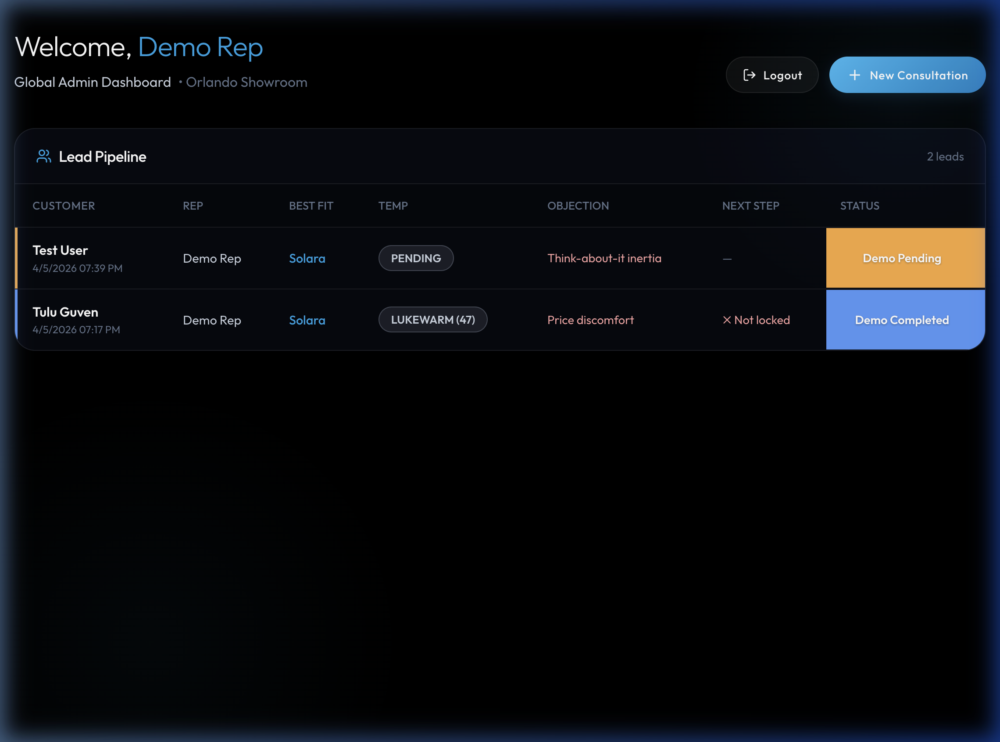
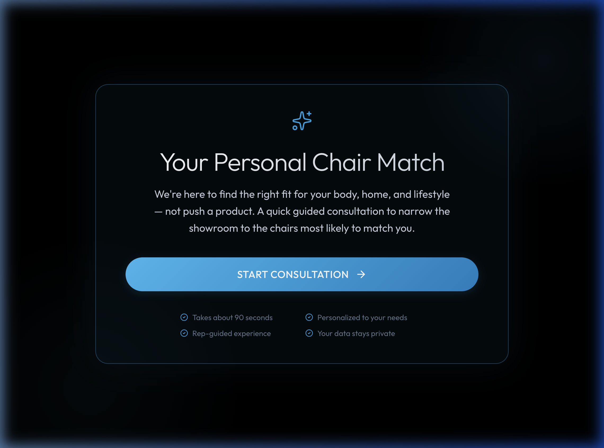
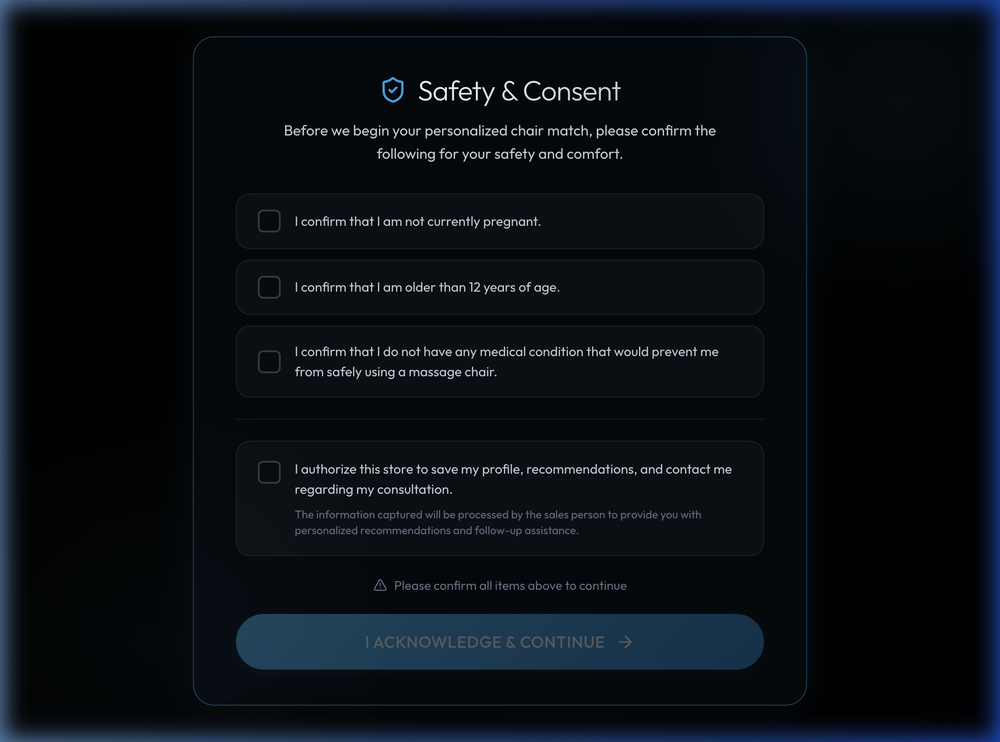
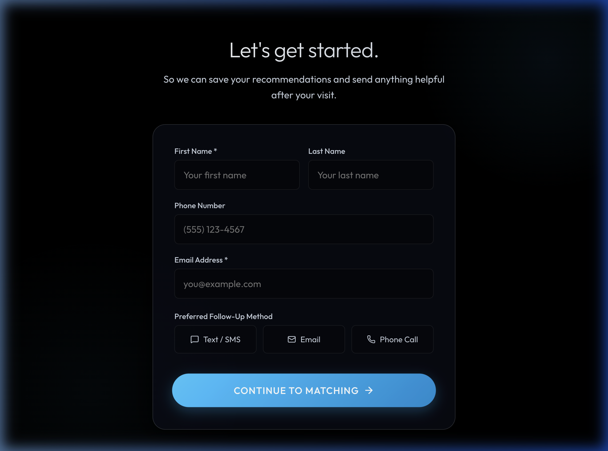
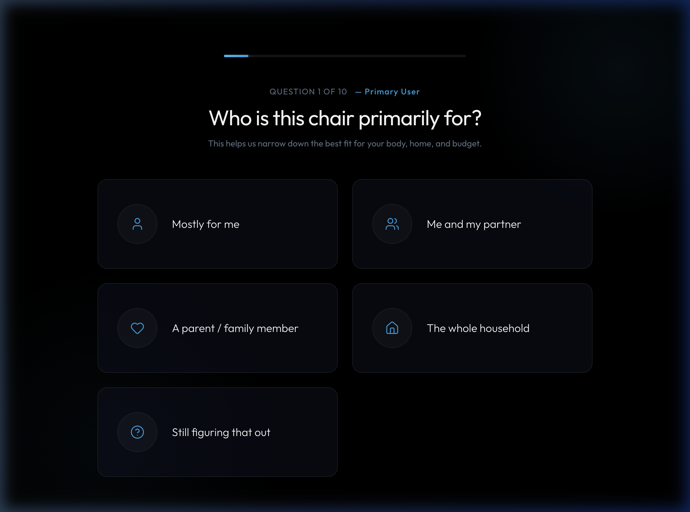
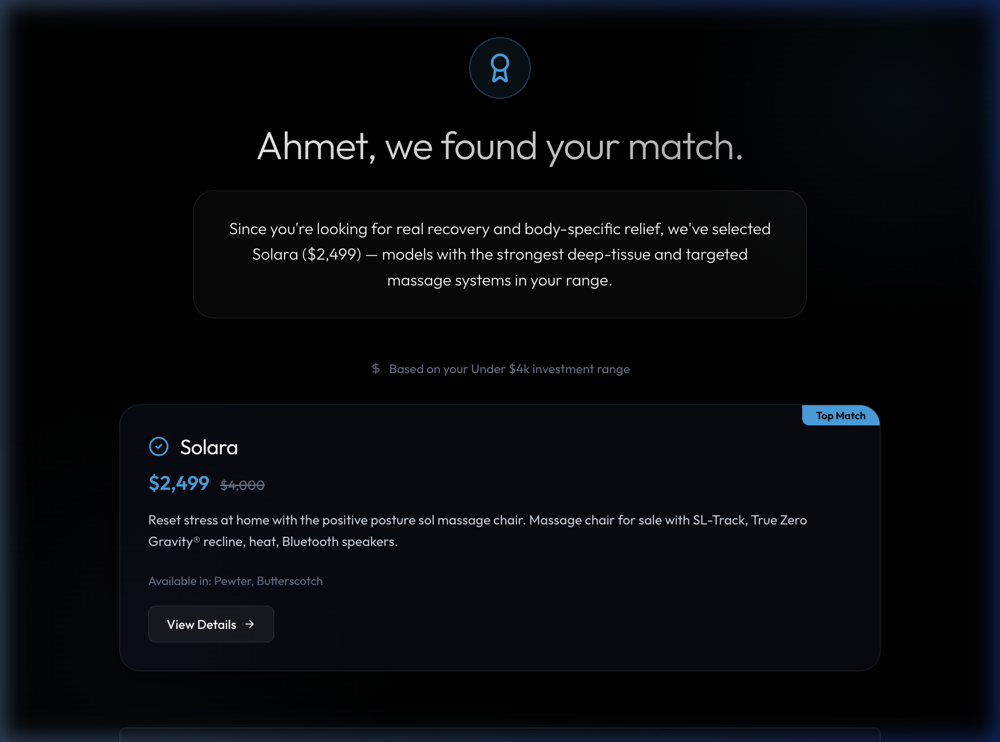
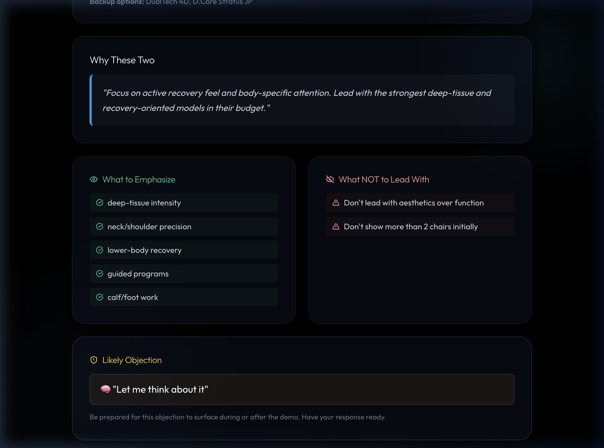

01 Bu Sistem Nedir?
Showroom'a gelen müşteriyi karşılayan, ihtiyaçlarını anlayan, doğru koltuğu bulan ve ziyaret sonrası takibi otomatikleştiren dijital satış asistanı.
graph LR
A["🚶 Müşteri
showroom'a gelir"] --> B["📱 Rep tablet
açar"]
B --> C["❓ 12 soru
sorulur"]
C --> D["🧠 Sistem
analiz eder"]
D --> E["🪑 Koltuk
önerilir"]
E --> F["🏪 Fiziksel
demo yapılır"]
F --> G["📊 Zekâ raporu
üretilir"]
G --> H["📩 Takip mesajları
otomatik yazılır"]
style D fill:#1e293b,stroke:#0ea5e9,color:#f1f5f9
style E fill:#1e293b,stroke:#22c55e,color:#f1f5f9
style G fill:#1e293b,stroke:#a78bfa,color:#f1f5f9
🎯 Müşteri İçin
Premium danışmanlık deneyimi — form doldurma hissi yok.
🧑💼 Temsilci İçin
Hangi koltuğu göster, neyi vurgula, hangi itirazı bekle — tümü hazır.
📊 Sahip İçin
Tüm müşteriler, sıcaklık puanları, sonraki adımlar — tek panelde.
02 9 Adımlı Müşteri Yolculuğu
1Panel
2Karşılama
3Onay
4İletişim
5Sorular
6Eşleştirme
7Demo
8Rapor
9Sonuç
graph LR
subgraph Veri Toplama
A["Panel"] --> B["Karşılama"] --> C["Onay"] --> D["İletişim"]
end
subgraph Keşif
D --> E["Sorular
10+2"] --> F["Koltuk
Eşleştirme"]
end
subgraph Demo + Zekâ
F --> G["Demo
Rehberi"] --> H["Rep
Raporu"] --> I["Final
Sonuç"]
end
I --> A
style F fill:#1e293b,stroke:#22c55e,color:#f1f5f9
style I fill:#1e293b,stroke:#a78bfa,color:#f1f5f9
Ekranlar — Uygulamadan Görseller

1. CRM Panel — Tüm müşteri listesi

2. Karşılama — Premium danışmanlık tonu

3. Onay — 3 medikal + 1 iletişim izni

4. İletişim — Ad, telefon, e-posta, tercih

5. Sorular — 10 core + 2 dinamik

6. Koltuk Eşleştirme — Fiyat + renk

7. Demo Rehberi — Temsilciye strateji
03 12 Soru Sistemi
graph TD
A["10 Ana Soru
sırasıyla sorulur"] --> B{"10. soru bitti"}
B --> C["Sistem en büyük
endişeyi tespit eder"]
C --> D["2 bonus soru
o endişeye özel"]
D --> E["Toplam 12 cevap
→ Alıcı profili hazır"]
style E fill:#1e293b,stroke:#22c55e,color:#f1f5f9
10 Ana Soru → Ne Öğreniliyor?
| # | Soru | Sistem Ne Öğreniyor? |
|---|
| 1 | Bu koltuk kimin için? | Tek kişi mi ortak karar mı? |
| 2 | Bugün sizi buraya ne getirdi? | Müşteri ne kadar ciddi? (sıcak/soğuk) |
| 3 | Günlük rutininiz nasıl? | Hangi vücut bölgesine odaklanılacak? |
| 4 | Karar verirseniz en önemli olan ne? | Ana endişe (demo stratejisini belirler) |
| 5 | Hangi yatırım seviyesi uygun? | Bütçe bandı → sadece uygun koltuklar gösterilir |
| 6 | Bu tür alışverişi nasıl yaparsınız? | Karar zorluğu (eş, ölçü, karşılaştırma?) |
| 7 | Farkı en çok nerede hissetmek istersiniz? | Demo sırasında vurgulanacak bölge |
| 8 | Kararı ne kolaylaştırırdı? | Takip mesajının konusu |
| 9 | Sizi ne durdururdu? | En büyük engelleyici → takip stratejisi |
| 10 | Ne zaman kullanmak istersiniz? | Zamanlama aciliyeti (sıcak/soğuk) |
6 Olası Endişe → 2 Bonus Soru
graph LR
A["🤝 Eş Kararı"] --> Z["2 soru eklenir"]
B["💰 Ödeme"] --> Z
C["📐 Alan"] --> Z
D["🔍 Karşılaştırma"] --> Z
E["🛡️ Güven"] --> Z
F["🤔 Düşüneyim"] --> Z
style Z fill:#1e293b,stroke:#22c55e,color:#f1f5f9
04 9 Boyutlu Puanlama
Her cevap arka planda 9 farklı kategoriye puan ekler. Sonuçta her kategoriden en yüksek puanlı değer kazanır.
graph TD
A["Müşteri bir cevap seçer"] --> B["Cevabın gizli etiketleri
9 boyuta puan ekler"]
B --> C["12 soru bitince
her boyutta kazanan belirlenir"]
C --> D["Alıcı Profili"]
D --> E["Demo Şeridi + Koltuk Havuzu"]
D --> F["Bütçe Filtresi"]
D --> G["Müşteri Sıcaklığı 0-100"]
E --> H["🪑 Koltuk Önerisi"]
F --> H
style H fill:#1e293b,stroke:#22c55e,color:#f1f5f9
🧭 Alıcı Yönelimi
Değer · Toparlanma · Premium · Ortak Kullanım · Araştırma
⚡ Ana Sürtünme
Alan · Ödeme · Eş · Karşılaştırma · Güven · Düşüneyim
🎯 Demo Şeridi
6 farklı showroom stratejisi (aşağıda detay)
💰 Bütçe Bandı
$4k altı · $4-8k · $8-12k · $12-16k · $16k+
⏱️ Zamanlama
Sıcak · Ilık · Soğuk
🧩 Karar Zorluğu
Düşük · Orta · Yüksek
🛡️ Güvence İhtiyacı
Düşük · Orta · Yüksek
📬 Takip Açısı
Eş özeti · Ödeme · Ölçü · Karşılaştırma · Servis
🌡️ Müşteri Sıcaklığı
0-100 puan (başlangıç: 30, her cevap +/-)
05 Koltuk Eşleştirme — 6 Demo Şeridi
graph TD
A["Puanlama sonucu:
Demo Şeridi belirlenir"] --> B{"Hangi şerit?"}
B --> C["🟢 Değer Başlangıç"]
B --> D["🔵 Toparlanma"]
B --> E["🟣 Premium Kesinlik"]
B --> F["🟠 Ortak Ev Uyumu"]
B --> G["🔴 Güvenli Karşılaştırma"]
B --> H["🔵 Alan Güvenli"]
C --> I["Her şeridin
kendi koltuk havuzu var"]
D --> I
E --> I
F --> I
G --> I
H --> I
I --> J["Bütçeye göre filtre"]
J --> K["🪑 Final öneri"]
style K fill:#1e293b,stroke:#22c55e,color:#f1f5f9
| Şerit | Hedef Alıcı | Koltuk Havuzu |
|---|
| Değer | Bütçe bilincli, kalite arayan | Solara · Brio Plus · MAF1 · KOYO · DualTech 4D |
| Toparlanma | Ağrı/gerginlik/toparlanma odaklı | Brio Sport · DualTech Pro AI 4D · DualTech 4D · Stratus JP · Brio Plus |
| Premium | En iyiyi isteyen, güven arayan | M8 NEO LE · MAN1 · M8 NEO · Cirrus JP · D.Core 2 · MAK1 |
| Ortak Ev | Çift/aile, çoklu kullanım | Brio Plus · KOYO · DualTech 4D · MAF1 · Solara |
| Karşılaştırma | Araştırmacı, net fark görmek isteyen | Stratus JP · R6 · Cirrus JP · MAN1 · M8 NEO · Brio Sport · Pro AI 4D |
| Alan Güvenli | Sığacak mı endişesi olan | MAF1 · DualTech 4D · Brio Plus · Solara · R6 · Cirrus JP |
06 Bütçe Filtresi
Sistem asla bütçe dışı koltuk önermez. Şeritteki koltuklar bütçeye göre filtrelenir.
graph LR
A["Şerit koltuk havuzu"] --> B{"Bütçe bandında
koltuk var mı?"}
B -->|"2+ koltuk"| C["İlk 2'yi öner"]
B -->|"1 koltuk"| D["1 şerit + 1 global"]
B -->|"0 koltuk"| E["En yakın uygun
koltuğu bul"]
C --> F["🪑 Öneri + Fiyat"]
D --> F
E --> F
style F fill:#1e293b,stroke:#22c55e,color:#f1f5f9
15 Koltuk — Fiyat Haritası
| Koltuk | Marka | Satış Fiyatı | Bant |
|---|
| Solara | Positive Posture | $2.499 | $4k↓ |
| Brio Plus | Positive Posture | $4.999 | $4-8k |
| MAF1 | Panasonic | $5.999 | $4-8k |
| DualTech 4D | Positive Posture | $7.999 | $4-8k |
| KOYO 303TS | KOYO | $7.999 | $4-8k |
| Brio Sport | Positive Posture | $8.999 | $8-12k |
| OHCO R6 | OHCO | $9.999 | $8-12k |
| Stratus JP | D.Core | $11.499 | $8-12k |
| Pro AI 4D | Positive Posture | $11.999 | $8-12k |
| MAK1 | Panasonic | $12.499 | $12-16k |
| Cirrus JP | D.Core | $12.999 | $12-16k |
| MAN1 | Panasonic | $13.999 | $12-16k |
| D.Core 2 | D.Core | $14.999 | $12-16k |
| M8 NEO | OHCO | $14.999 | $12-16k |
| M8 NEO LE | OHCO | $18.000 | $16k+ |
07 Demo Rehberi
Temsilciye fiziksel demoyu nasıl yönetmesi gerektiğini gösteren strateji ekranı.
graph LR
A["Müşteri koltuğu
görür"] --> B["Temsilci
'Demo Başlat'
basar"]
B --> C["Strateji ekranı
açılır"]
C --> D["✅ Neyi vurgula"]
C --> E["🚫 Neyle başlama"]
C --> F["⚠️ Muhtemel itiraz"]
C --> G["💡 Neden bu 2 koltuk"]
style C fill:#1e293b,stroke:#f59e0b,color:#f1f5f9
✅ Neyi Vurgula
Müşterinin cevaplarına göre seçilmiş özellikler (ör. derin doku, boyun hassasiyeti)
🚫 Neyle Başlama
Kaçınılması gerekenler (ör. estetikle değil fonksiyonla başla)
⚠️ Muhtemel İtiraz
Müşterinin büyük olasılıkla söyleyeceği şey (ör. "eşime danışmalıyım")
💡 Neden Bu İkisi
1 numara ve yedek koltuğun neden seçildiğinin kısa açıklaması
08 Demo Sonrası Rapor — 28 Alan
Temsilcinin demo sonrası doldurduğu form. Gerçek satın alma sinyallerini yakalar.
graph LR
subgraph 28 Alan
A["A. Koltuk Seçimi
6 alan"]
B["B. Demo Davranışı
3 alan"]
C["C. Satın Alma
Sinyalleri
8 evet/hayır"]
D["D. İtiraz Analizi
5 alan"]
E["E. Sonraki Adım
6 alan"]
end
A --> F["Demo Puanı
0-100"]
B --> F
C --> F
D --> F
E --> F
style F fill:#1e293b,stroke:#a78bfa,color:#f1f5f9
🪑 A. Koltuk Seçimi
Hangi koltukları denedi? Hangisine en uzun oturdu? En çok soruyu hangisi aldı? En güçlü tepki hangisine?
👁️ B. Davranış
Katılım seviyesi · Tepki tipi (heyecanlı → nötr) · Kararlılık (hazır → kararsız)
📡 C. Sinyaller
Ödeme sordu mu? Teslimat? Garanti? Tarih verdi mi? Tekrar oturdu mu? Eşinden bahsetti mi?
🛑 D. İtiraz
Ne söyledi? Gerçek mi bahane mi? Gizli itiraz ne? Satın aldı mı?
📋 E. Adım
Sonraki adım kilitlendi mi? Türü ne? Takip tarihi? Rep notları? Satış zorluğu?
📊 Sonuç
Bu 28 alan → Demo Puanı (0-100) hesaplanır ve keşif puanıyla birleştirilir.
09 Final Karar Motoru
graph TD
A["📝 Keşif Puanı
(12 sorudan)
Ağırlık: %35"] --> C["Birleşik Puan
0-100"]
B["🪑 Demo Puanı
(28 alandan)
Ağırlık: %65"] --> C
C --> D{"Sıcaklık?"}
D -->|"85-100"| E["🔥 SICAK
Hemen kapat"]
D -->|"65-84"| F["🟡 ILIK
Hedefli bilgi gönder"]
D -->|"45-64"| G["🟠 ILIMAN
Günlerce besle"]
D -->|"0-44"| H["❄️ SOĞUK
Uzun vadeli liste"]
style E fill:#1e293b,stroke:#22c55e,color:#f1f5f9
style H fill:#1e293b,stroke:#ef4444,color:#f1f5f9
Koltuk Kararı — 6 Faktör Ağırlığı
graph LR
A["Keşif eşleşmesi
%35"] --> Z["🪑 Final
Koltuk"]
B["Demo tepkisi
%25"] --> Z
C["Rep önerisi
%15"] --> Z
D["En uzun oturma
%10"] --> Z
E["En çok soru
%10"] --> Z
F["İtiraz uyumu
%5"] --> Z
style Z fill:#1e293b,stroke:#22c55e,color:#f1f5f9
10 Otomatik Takip Mesajları
graph TD
A["Müşteri satın almadı"] --> B{"Ana endişesi ne?"}
B --> C["🤝 Eş"]
B --> D["💰 Ödeme"]
B --> E["📐 Alan"]
B --> F["🔍 Karşılaştırma"]
B --> G["🛡️ Güven"]
C --> H["24 saat: Eş özeti
72 saat: İkili davet
7 gün: Çift uyumu"]
D --> I["24 saat: Finansman
72 saat: Aylık tutar
7 gün: Günlük maliyet"]
E --> J["24 saat: Ölçüler
72 saat: Görüntülü yardım
7 gün: Kompakt alternatif"]
F --> K["24 saat: 2li karşılaştırma
72 saat: Ana fark
7 gün: Tekrar oturma"]
G --> L["24 saat: Garanti detay
72 saat: Neden bu model
7 gün: Özel randevu"]
style H fill:#1e293b,stroke:#f59e0b,color:#f1f5f9
style I fill:#1e293b,stroke:#22c55e,color:#f1f5f9
style J fill:#1e293b,stroke:#0ea5e9,color:#f1f5f9
style K fill:#1e293b,stroke:#a78bfa,color:#f1f5f9
style L fill:#1e293b,stroke:#ef4444,color:#f1f5f9
Satın aldıysa: Farklı bir akış → Sipariş onayı (24s) → Teslimat güncellemesi (1 hafta) → Garanti check-in (1 ay) → Referans bonusu (3 ay).
11 Ürün Veritabanı
Her koltuk için derinlemesine teknik bilgi. Fiyat değişince tek yerde güncellenir, uygulama her yerde otomatik güncellenir.
💰
Fiyat · Taksit · Garanti
💆
Masaj tipi · 3D/4D · Hareketler
🔥
Isı bölgeleri · Kızılötesi
♻️
Zero Gravity · Yatış açısı
📏
Boyutlar · Ağırlık kapasitesi
🎯
Hedef kullanıcı · Rep notları
Masaj Koltuğu CRM — Sistem Rehberi
15 koltuk · 9 boyut · 6 strateji · otomatik takip